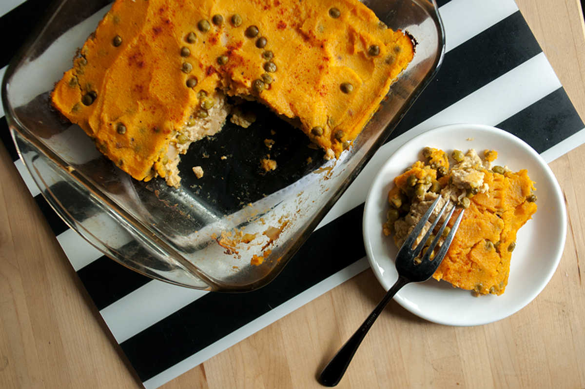
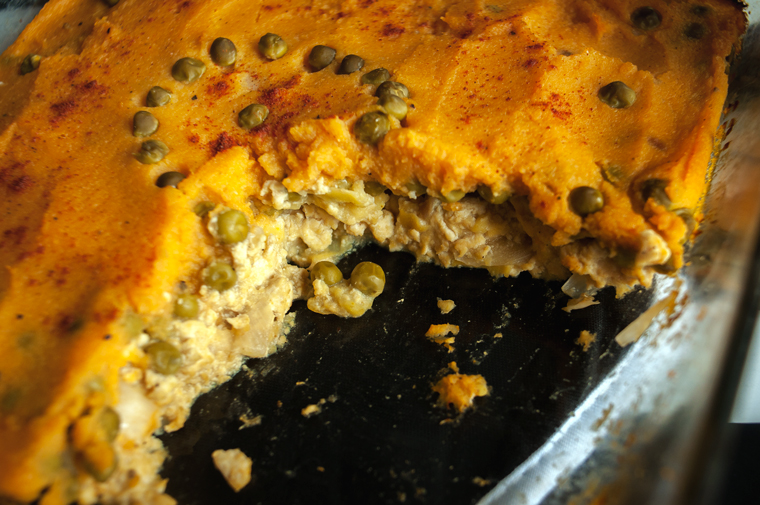

pate chinois
4 servings — 40 minutes
Whenever I ask Devine what he wants to eat, he'll always say pasta. I don't always say yes to this, not unless I want to eat pasta everyday. Second, he'll ask for Pâté Chinois. It's hard for me to say no to that, it's one of my favourite childhood meals, so I succumb, peek into the fridge and see what variation of it I can make. It's a super versatile dish, my recipe has layers consisting of tofu and burmese tofu, green peas, sweet potato and cauliflower.

Pâté Chinois is very much like Shepherd's pie, I'm not sure how it got that name, I've researched it but no one knows its true origins. Quotes from Wikipedia: "...one possible explanation for the Chinese reference is that it was introduced to Canadian railway workers by Chinese cooks during the building of the North American railroads in the late 19th century". I guess we'll never know.
My mom made this all the time when I was a kid - she would make the traditional meat version with creamed corn. My meals, as you know, are always meatless, and I now have an aversion to creamed corn, but the spirit of the dish remains. It inspires the same kind of comfort.
Substitutions:
I've made versions of this dish with just cauliflower, or just using tofu, or just potatoes too. I've made it so often, I've gone through every possibility. All in all, it consists of a protein layer (tofu, burmese tofu, lentils etc) veggie layer (corn or peas), and topped with a doughy vegetable (potatoes, pumpkin, cauliflower etc).
I've also made a version which consists of cubed, cooked potatoes (or pumpkin), with scrambled chickpea flour and corn — as I've said, it's always good and can take on different forms!
 white cauliflower 1 cup
white cauliflower 1 cup sweet potatoes 1
sweet potatoes 1 green peas 1 small can
green peas 1 small can tofu 1 pack , firm
tofu 1 pack , firm soy sauce 30 ml
soy sauce 30 ml yellow onion 1/2
yellow onion 1/2 smoked paprika 5 ml
smoked paprika 5 ml
pate chinois
- Preheat oven to 375F.
- Bring a pot of water (or vegetable bouillon for added flavour) to a boil. Cook 1 large cubed sweet potato as well as 1 cup of chopped white cauliflower florets until tender.
- Drain, mix with 5 ml of smoked paprika, and purée with an immersion blender. Season with sea salt and black pepper. Set aside.
- Take 1 block of firm tofu, and mash it down using a fork or just using your hands. I just squish it with my fingers to get a crumbly texture. (Alternatively, for a soy-free Pâté Chinois you can also use burmese tofu.)
- In a large pan, brown the yellow onion with 5 ml of olive oil. Add the tofu, 30 ml of soy sauce and 1 drop of liquid smoke. Cook for a few minutes. Season with black pepper and sea salt.
- When cooked, press tofu mix into bottom of a 8x8 baking dish.
- Cover tofu mix with the contents of 1 can of unsalted green peas (reserve a few for the top) and with the puréed cauliflower/sweet potato.
- Smooth with a spatula, decorate with some green peas and sprinkle with smoked paprika.
- Bake for 30 minutes, or until lightly browned.
- Let cool, serve with some sambal oelek or some other spicy condiment!